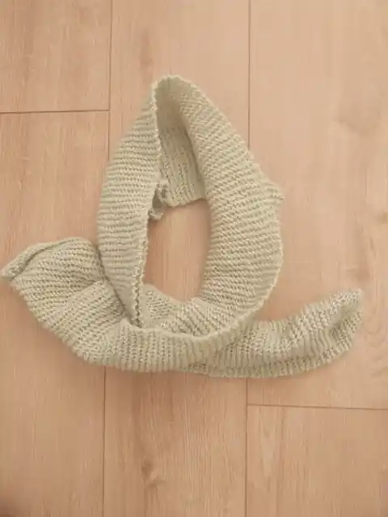

01 · First project
My first scarf
This is my very first knitted scarf — the first finished project in my Luchi Crafts journey. It is a simple, cosy piece and a lovely reminder of where my knitting began.
- Status
- Finished
- Pattern
- To be added
- Yarn
- To be added